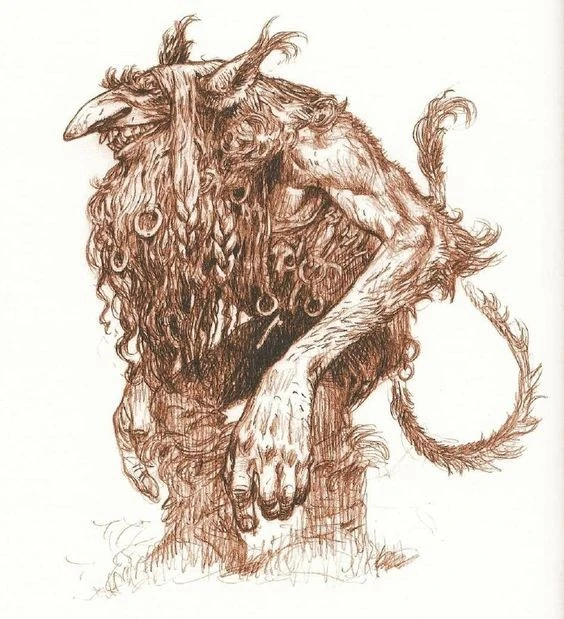

About Domkyrkan
The legend
Legends swirl around Lund Cathedral, and one captivating tale involves the Domkyrkan troll. As the story goes, a mischievous troll vowed to disrupt the cathedral's construction. Each night, he'd dismantle the stones built during the day. The clever stonemasons, however, outsmarted him. They carved a special stone with runes that only appeared at night. The confused troll, unable to find the correct stone, gave up his sabotage, and the cathedral was finally completed.
History
Lund Cathedral, also known as Domkyrkan, boasts a rich history that stretches back centuries. Construction began in the 11th century, making it the oldest and largest church in Sweden. Initially a Catholic cathedral, it played a pivotal role in spreading Christianity throughout Scandinavia. Kings and archbishops were laid to rest in its crypt, solidifying its position as a powerful religious and symbolic center. Over the centuries, Domkyrkan witnessed numerous coronations, weddings, and countless religious ceremonies, serving as a spiritual cornerstone for generations. The cathedral transitioned to Lutheranism during the Reformation and remains a vibrant place of worship and cultural activity to this day. Its impressive Romanesque architecture continues to stand as a testament to a bygone era, attracting visitors to marvel at its beauty and explore its captivating history.
Present day
In its current state, Domkyrkan remains a vibrant center of worship and cultural activity. This majestic landmark, Sweden's oldest and largest church, continues to draw visitors with its impressive Romanesque architecture. Ongoing restoration efforts meticulously maintain its beauty, ensuring its intricate carvings, stained glass windows, and exterior masonry stand the test of time. While preserving its historical character, these projects also incorporate modern advancements for functionality and accessibility, making Domkyrkan a welcoming place for all.